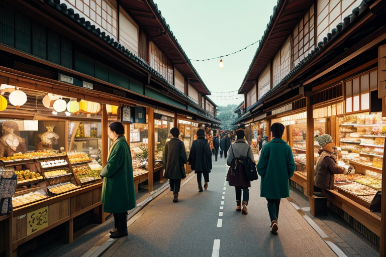
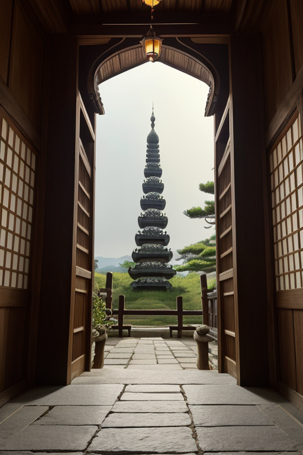
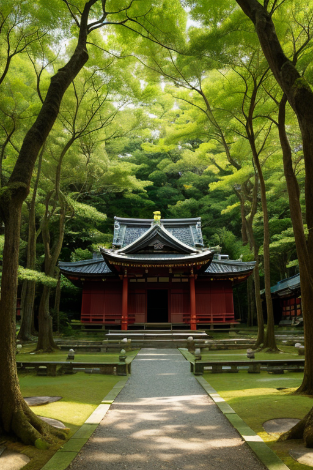
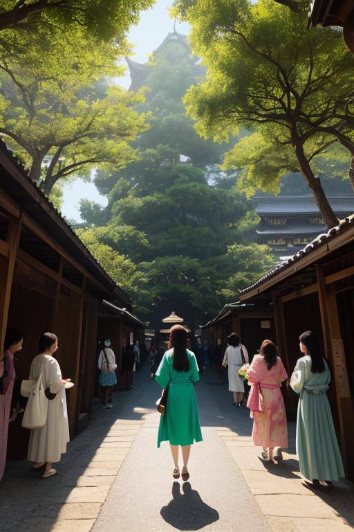

第一章 現実の奈良
あなたはまだ気づいていない。この土地にも、王がいることを。
近鉄奈良駅から続く商店街は、鹿せんべいの甘い香りと観光客の熱気に満ちていた。土産物屋の店先には鹿の置物が並び、レジの音が軽やかに鳴る。金の流れは、ここでは鹿の形をした陶器や、紫色に染まった奈良漬けの瓶となって、人々の手から手へと渡っていく。活気と欲望。それは千年以上前、平城京の東西市に集った人々のざわめきと、本質では変わらない。
その喧噪のただ中、奈良公園の片隅に、一人の男が佇んでいた。深緑のコートを纏い、鹿の群れを静かに見つめるその姿は、周囲の喧騒を不思議なほど吸い込んでしまうようだった。彼はナラティア・オリジン、この地に遣わされた王である。彼の目には、人々の足元を流れる「歪み」の細い亀裂が、微かに光って見えていた。それは商いの熱に煽られ、少しずつ膨らもうとする古傷だった。
彼は何もせず、ただ見つめている。始まりの地に根差す者として、その全てを受け止めることが、彼の役目だからだ。

第二章 歪みの兆候
東大寺の大仏殿前、修学旅行生の歓声が春の空気を震わせる。その足元、石畳の僅かな隙間から、琥珀色の微光が漏れていた。歪みの脈動だ。人々の欲望と期待、そして「ここに来た」という充足感が、古い地層に蓄積した静寂をかき乱し、微かな軋みを生んでいた。オリジェラがそっと肩に止まる。「商いの波が、古代の波を圧縮しています」。彼女の声は、遠くの鐘の音のように響いた。
王は目を閉じた。視界には、平城京の時代から連なる無数の「始まり」の線が浮かび上がる。聖武天皇の祈り、大仏建立の熱狂、そして今、鹿せんべいを求めて押し寄せる人々の波。全ては「始まり」への渇望であり、その熱量そのものが、この土地の古層を押し曲げようとしている。吉野山から流れ下る清冽な気と、地上の熱気がぶつかり合う境界で、歪みは育つ。
彼はまだ手を出さない。兆候を観察し、その「始まり」を理解することが、調整の第一歩だからだ。
第三章 歪みの渦
春日大社の深い森の奥、鹿たちが突然、一斉に首を上げた。地面の下で、何かが蠢いた。それは経済の熱量そのものだった。観光客の足音、レジの音、鹿せんべいを包むビニールの軋み。それらが全て、平城京の礎石が眠る古層を、微かに、しかし確実に押していた。歪みは、人の欲望の密度と比例して育つ。
ナラティア・オリジンは、奈良公園の喧噪を一歩離れた木陰に立ち、その熱気の流れを見つめていた。彼の目には、金の流れが血管のように街を走り、その末端で「もっと」という無数の小さな叫びが火花を散らす様が映る。歪みを調整するには、この熱狂そのものを冷ますことが最も確実だ。一瞬、ほんの一瞬、人の流れを淀ませ、購買の手を止めさせる「静寂」を送り込むイメージが脳裏を過ぎる。
しかし、彼は手を下ろさなかった。その欲望の先にある、家族の笑顔や、初めての旅行の感動といった、別の「始まり」の種も、同じ熱の中に混ざっていることを知っていたからだ。王は微調整者であって、破壊者ではない。彼はただ、深く息を吸い、古層から湧き上がる静寂を自身の内に留めた。歪みと人間の営みは、時に不可分なのだ。

第四章 妖精との対話
東大寺の大仏殿の陰、観光客の喧騒が届かない境内の片隅で、ヤマトナが静かに語り始めた。その声は、古い木々のざわめきのようだった。「商いの熱は、祈りの熱と似ています。かつて聖武天皇がこの地に大仏を建立した時、人々は銅や金を捧げ、労働を捧げた。それは欲望というより、不安を静め、未来への『始まり』を願う行為でした」
オリジェラが頷き、奈良公園の鹿たちが集う方向を見つめた。「今、人々が鹿せんべいを買い、土産を選ぶのも、同じです。所有したいという欲望の奥には、記憶を持ち帰り、大切な人との時間を『始めたい』という願いがある。歪みは、その願いが焦りや過剰な競争に歪められるときに生じます」
王は二人の言葉を聞き、平城京の跡地に立つ。ここで始まった律令国家のシステムも、人と物と金の流れを調整するための壮大な試みだった。その根本にあったのは、混乱の中に秩序を、つまり「静寂」を生み出そうとする意志。商いの喧噪の底流にも、同じ意志が脈打っていることに、彼は今、気付かされた。歪みの調整とは、その意志が迷わないよう、ほんの少し手を貸すことに他ならない。

第五章 微調整と余韻
近鉄奈良駅前の交差点は、観光客と通勤客が交錯する朝の混雑のピークを迎えていた。ナラティア・オリジンは、その喧噪のただ中に立っていた。彼の目には、人々の流れが、欲望や焦り、期待といった感情の色を帯びた光の帯として映る。その流れが一点で絡まり、小さな「歪み」の渦を生み出そうとする。それは、転倒する老人でも、衝突する自転車でもありえた。
彼は微かに息を吐いた。深緑の光が、紋章の古木の輪郭のように一瞬、交差点の空気を揺らした。ほんの数センチ、人々の歩幅が調整される。タイミングが百分の一秒ずれる。すれ違うカバンがかすめず、足を取られそうになった老人の脇に、無意識に手を伸ばす学生の姿が現れる。何事も起きない日常が、ほんの少し調整された力によって、そのまま続いていく。
東大寺の大仏殿を背に、彼は静かに目を閉じた。掌で感じるのは、この土地の古層から続く、深い静寂の振動だ。すべての始まりは、この静寂の中にある。そして今この瞬間も、喧噪の底でそれは息づき、彼の微調整を支えている。誰にも気づかれない調整が終わり、交差点の雑踏は、変わらぬ活気へと戻っていった。
あなたの町にも、王がいる。